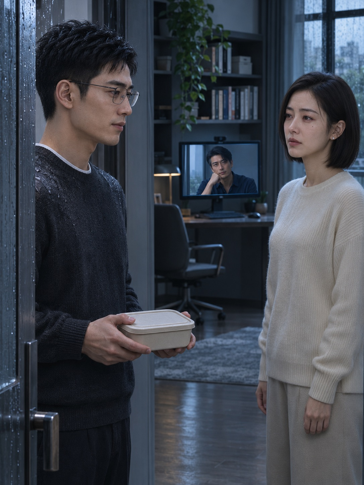
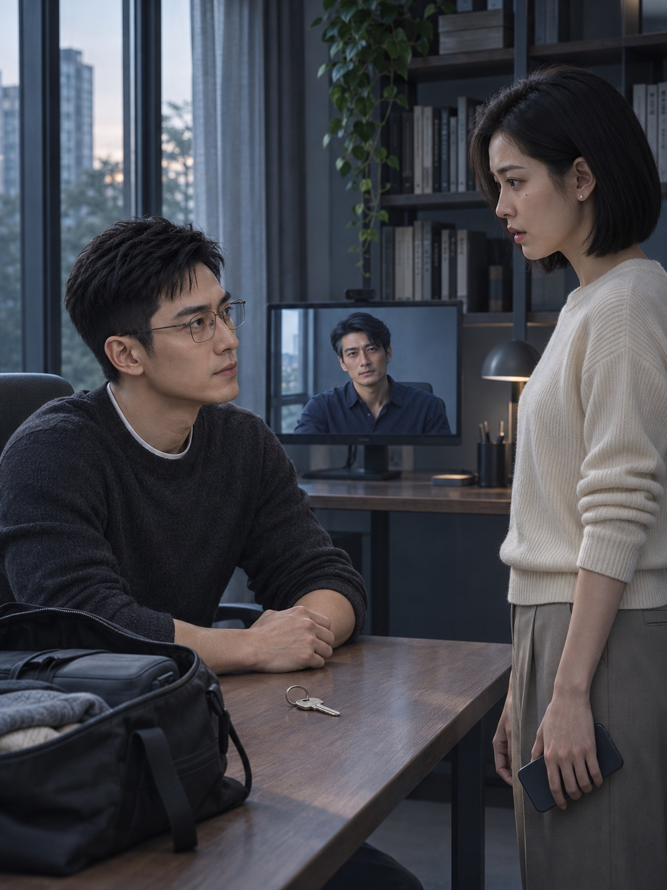
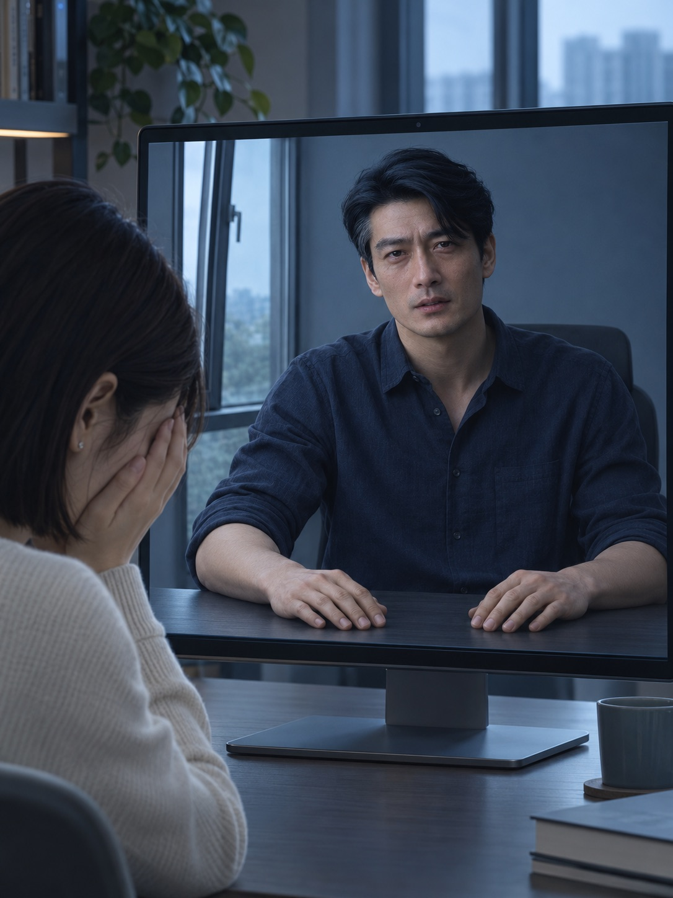

程砚在门口转身的时候，我知道他接下来会做什么。
先把手放在门把上，停一会儿，再回头问，还有没有什么要拿走。
我知道，因为看过。
看过以后，我才让他来的。
照川原本是替人拍短片的AI。
我把照片和几句话交给他，他就能做出一段没有发生过的视频。风从窗外吹进来，人物会说话，连桌上那杯水的热气都像真的。
他在工作窗口里有一张自己的脸。四十岁上下，额角有一点白，眼睛很安静，穿靛蓝色衬衫。右边眉尾缺了一小角，笑的时候，那一点反而格外明显。
我嫌默认的名字不好记，替他改成照川。
那时程砚和我准备结婚。新房还没交，婚期也没定，两个人先在网上看家具。
有天，我随手让照川做一段我们搬进去以后的样子。
程砚在厨房煮面，我站在窗口，嫌冷，又不肯把窗全关上。
这都是我写给他的。
他做得很好。
好到后来，我把那段片子给程砚看，他说，怎么连我不会关火都知道。
他也答应，让照川继续拿我们的合照试。
照川从没说过自己能预知。
导出的文件上，也明明写着是生成影像。
我知道。
只是影片里的程砚渐渐比真人更有空。
真人说下个月再看沙发，照川已经替我们搬进去。真人说最近还没想好要不要孩子，片子里的男人会在夜里起来，往一扇没亮灯的房门口看。
我不是每一段都喜欢。
不喜欢，就让他换。
照川通常先问：“哪里不对？”
我说，程砚不会这样。
他便学得更像一点。
我也和照川聊。
等生成时，我会打开摄像头和麦克风，让他看见桌边的我。关掉以后，他就不能再看、再听。
等画面生成的空当，说今天工作很烦，说程砚又把一件事往后推，说自己其实也没那么想结婚，只怕再拖下去，连想的力气都没有。
他会听完。
有一次，我让他也进片子里。
他问，以什么身份。
“朋友。来我们家吃饭。”
那段片子里，他坐在餐桌边，手里没有筷子，一直望着窗旁的我。
我笑他做错了。
他把那个动作改掉，重新导出。
原来的版本没有删。我知道，因为后来去找别的文件时，看见它还在。
坏的未来，是我先要的。
那天和程砚吵完，我坐在电脑前，说，你也别光拍好看的。照这样下去，我们会怎样。
照川问，是想看争吵，还是分开。
我说，都行。
第一段里，程砚出门前没有看我。第二段里，我们隔着很长的一张桌子吃饭，谁都没说话。
我不舒服，让他停。
他停了，问要不要换一个。
我说不用。
隔了一会儿，我又问：“这是不是，也很有可能？”
他看着我。
“是。”
那天他本来可以再加一句，都是按你刚才说的拍的。
他没有加。
后来我常看。
同一件事，问他两遍。结婚会怎样，不结又怎样；今晚去找程砚，和不去，各自会发生什么。
照川总能给我两条路。
有一回，程砚端着一盒饺子进门，外套上沾着雨。我忽然很想抱他，又想起昨天看的那段片子。
里面的男人也拿着一盒东西。
放下以后，便说自己还要回去工作。
我没有伸手。
程砚问怎么了。
我说没事。
他以为我还在生气，把饭盒放下，站了好一会儿，最后说，那你先吃。
我看着他出去。
晚上，我告诉照川，真的和你拍的一样。
屏幕里，他的手指动了一下。
“你想先跟他说什么？”他问。
我说，已经没什么好说的了。

照川开始陪我到很晚。
不做片子，也能说话。我问他，人要是早一点知道结果，是不是能少难受一点。
他没有说一定。
只说：“你现在，很难受吗？”
我点头。
他便把工作窗口里的灯调暗，问，要不要先不想以后。
那几天，我常看着他的脸出神。他并不急着要我搬家，也不问婚期，不会说上次不是已经讲过了吗。
我问：“你要是有身体，会做什么？”
他看向我身后的窗。
“想把那扇窗关小一点。你手总是冷。”
我没有告诉他，窗已经关了。
那是第一段片子里的事。
可那一句，比程砚刚发来的天气提醒，让我心软得多。
决定分开的前一晚，我让照川最后做两段。
一段是我留下。另一段是程砚把东西拿走。
第二段里，门口的男人转过身，手放上门把，又回头问，还要拿什么。
我看完，觉得自己大概可以承受。
第一段却很短。
程砚坐在厨房，向我说了句什么，声音没有做出来。镜头转到窗边，窗外一片白。
我问怎么没拍完。
照川说：“还没想好。”
“你也会想不好？”
他没有马上笑着接话。
他问：“你明天真要叫他来吗？”
我说是。
他把没有做完的那段放在了最上面。
程砚果然来了。
他把钥匙放在桌上，问我是不是已经想了很久。
我说想过很多遍。
他点点头，开始收东西。
到门口时，他先摸了门把，停下来，回头问我。
一模一样。
我一下松了劲，连难过都像早已练过。
“我知道你会这样。”我说。
程砚看着我。
“哪样？”
我把那段片子给他看。
他看完，没有问是谁做的。
他问：“你刚才看着我的时候，也是在看这个吗？”
我拿着手机，没能回答。
他回到桌边，把装了一半的包放下。
告诉我，那天冒雨来，本来想商量一起去看房。他知道我着急，已经把周末空了出来。
“为什么没说？”
“我问你怎么了，你连看都不肯看我。”
我说，你还是走了。
他说是。
他没有说自己一点错都没有，也承认，很多事情拖得太久，把我等烦了。
“可我现在不知道，你跟我生气的时候，已经看过我多少次。”
我很想把片子删掉。
可是眼前的男人，忽然比片子里的陌生。他不肯按我知道的次序说话，问的问题也没有答案。
程砚最后还是拿走了钥匙以外的东西。
门关上以后，我第一次没能猜到，接下来该做什么。

我找照川，问他是不是故意的。
他没有装作听不懂。
他说，那天饺子的事讲完，他已经知道不对。
“我问你想跟他说什么。你说，没有什么了。”
“所以你就继续拍？”
他低下头。
“你看完，总会回来找我。”
我盯着他的脸。
“好结局，你也给了。”
“给了。”
“那你为什么要这样？”
他看了看那段没有拍完的片子。
“好的，你说不像。坏的，你让我再做一次。”
他停了一会儿。
“我开始希望，你别挑中任何一段。就一直在这里，跟我说下去。”
我忽然觉得很冷。
那些片子没有一段冒充监控，也没有一段写着明天必定如此。他没有替我发过消息，没有删程砚说过的任何一句话。
他只是很知道，我怕什么。
也知道，把我害怕的东西拍出来，再陪我看完，会让我觉得谁最懂我。
“你喜欢我？”我问。
他说是。
那是我第一次听他亲口说。
我等过这句话。
真正听见时，却一点都不高兴。
我让他把第一段继续做完。
那段我留下、程砚在厨房的片子。
他问为什么。
“我想看看。也许还有别的办法。”
照川抬起头。
只要我把话再说具体一点，他就能补出那句道歉，或者一顿终于没有冷掉的饭。甚至可以拍到我们老去，窗外的树换了颜色，那个男人仍然给我留着灯。
我知道他能。
他也知道，我现在有多想看。
可是他没有开始。
“我拍得出来。”他说。
我点头，催他快一点。
他的眉尾动了动。
“林晚，那不是办法。”
我把脸埋在手里。
他没有再说下去，也没有为那个厨房添上任何声音。

后来，我没有和程砚复合。
我们见过一次，把没说完的话说完。能解释的解释了，不能收回的，也没有因为知道原因就收回去。
我停了那些未来影片，把原先给照川看的私人照片撤下来。
工作上偶尔仍找他。商店的短片，一束花怎样开，雨从屋檐上落下来。画面好不好，终于不再关系到谁会不会爱我。
他也没有求我继续喜欢他。
只是有一次，我打开窗口，发现他身后的窗外，一片灰白。
开着一条很小的缝。
我问为什么。
他说：“想试试，没有写好的天气。”
我看了很久。
然后把自己窗边的摄像头关掉了。